Halo! Perkenalkan, saya DELY. Di sini kita akan belajar bersama tentang sejarah peradaban besar dunia — mulai dari kejayaan Romawi dan Mongol, keindahan masa keemasan Islam, hingga kisah heroik Kerajaan Sriwijaya dan tragedi Perang Dunia. Sejarah bukan sekadar hafalan tanggal, tapi pelajaran hidup yang bisa kita ambil dari masa lalu! 📚
Dari desa kecil di tepi Tiber menjadi imperium yang mengatur dunia
Koresh Agung menyatukan Timur Dekat di bawah satu panji
Nusantara memimpin perdagangan maritim Asia Tenggara
Baghdad menjadi pusat ilmu pengetahuan dunia
Temujin menyatukan stepa dan menaklukkan dari Pasifik ke Eropa
Pembunuhan di Sarajevo memicu konflik yang mengubah peta dunia
Dari Lembah Tigris hingga Nusantara — kisah bangsa-bangsa yang membentuk dunia kita hari ini.
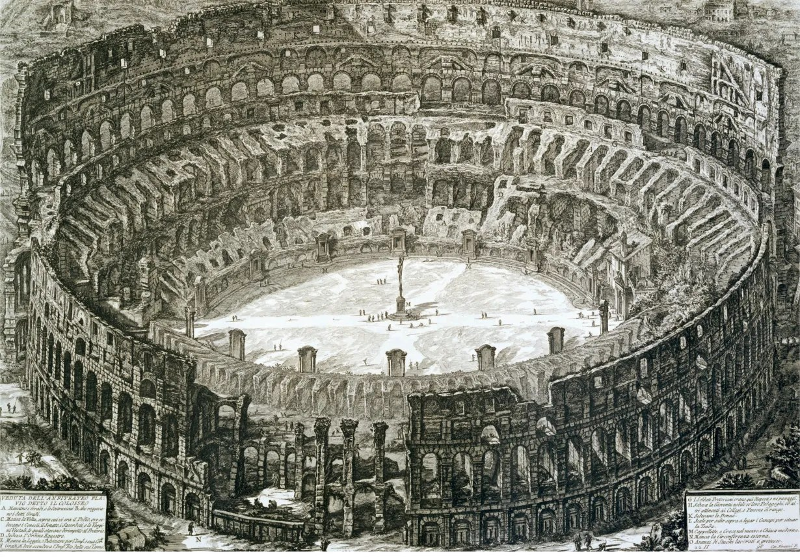
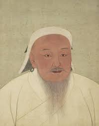
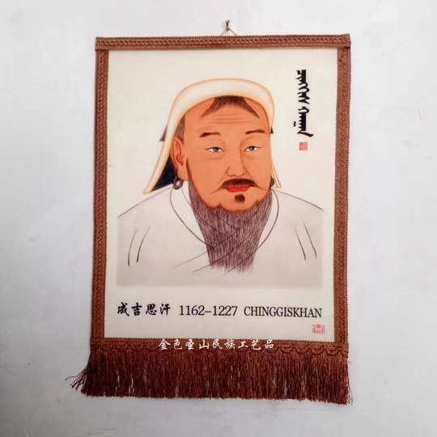
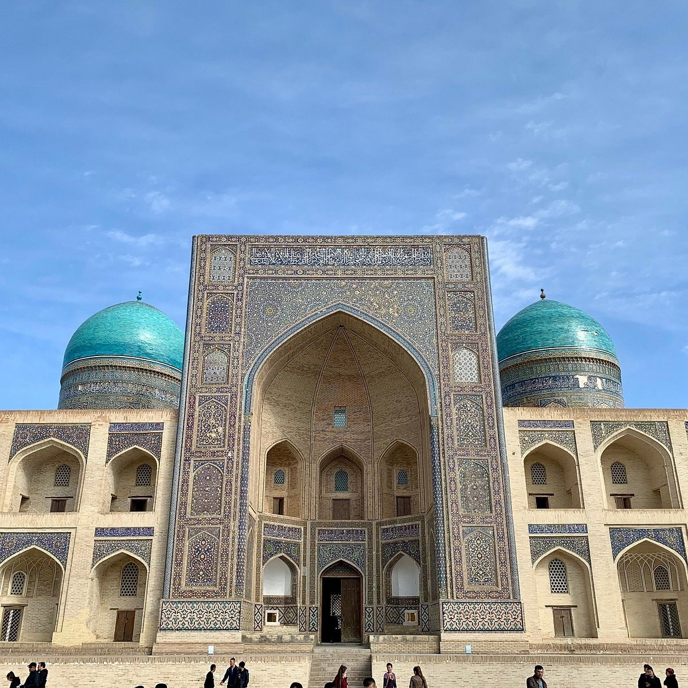
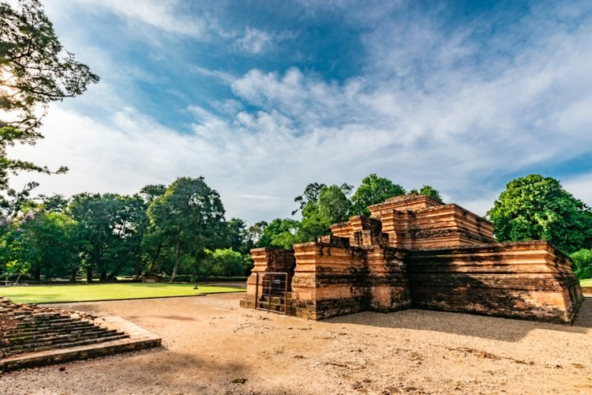
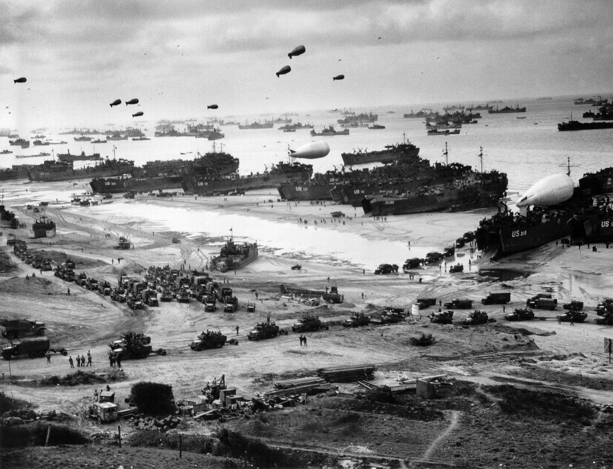
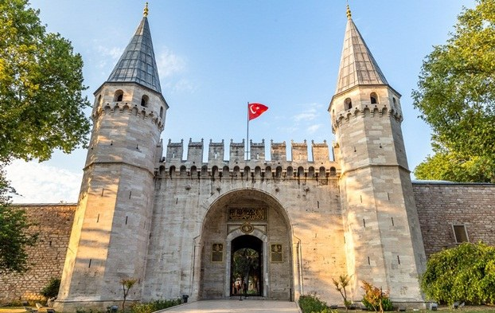
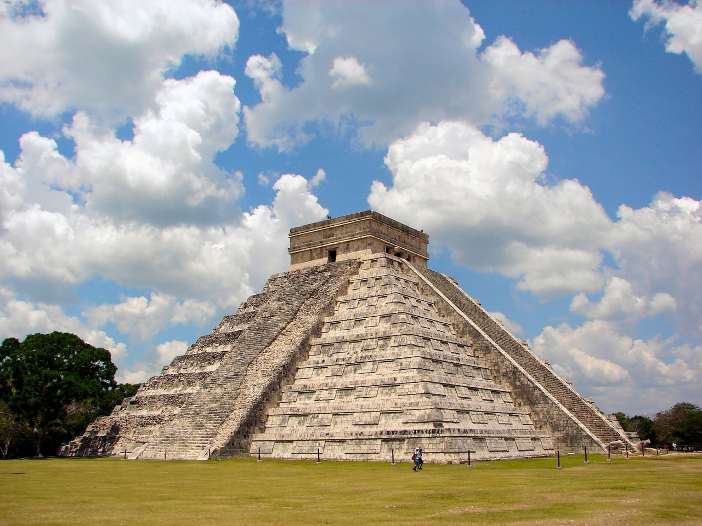
Dua konflik yang merenggut lebih dari 100 juta nyawa dan membentuk ulang tatanan politik dunia selamanya.
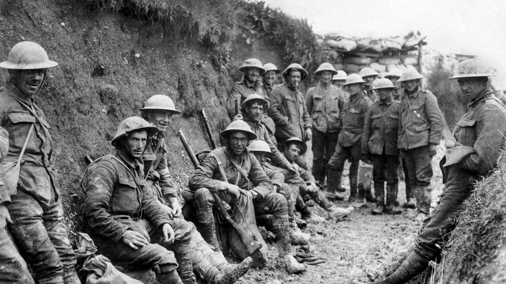
Archduke Franz Ferdinand ditembak mati, memicu sistem aliansi yang menyeret Eropa ke jurang perang.
Pasukan ANZAC dan Sekutu gagal merebut Selat Dardanella. 250.000 korban di kedua pihak.
Hari pertama: 57.470 tentara Inggris tewas atau terluka — hari tergelap dalam sejarah militer Inggris.
Telegram Zimmermann dan serangan kapal selam Jerman mendorong AS keluar dari isolasionisme.
Jerman dihukum berat: kehilangan wilayah, membayar reparasi, dan menanggung "war guilt clause" — benih WW2.
Jerman Nazi menyerang Polandia 1 September 1939. Dua hari kemudian Inggris dan Prancis menyatakan perang.
Jepang membombardir pangkalan AS; Hitler mengkhianati pakta dengan Stalin. Perang menjadi benar-benar global.
Kekalahan Jerman di Stalingrad — pertempuran paling mematikan dalam sejarah — membalik momentum perang.
6 Juni: 156.000 pasukan Sekutu mendarat di 5 pantai Normandia. Awal akhir rezim Nazi di Eropa.
Bom atom mengakhiri Pacific War. PBB lahir dari puing-puing untuk mencegah tragedi serupa terulang.
Barangsiapa tidak belajar dari sejarah, ia dikutuk untuk mengulanginya.
— George Santayana
Kajian mendalam tentang peristiwa, tokoh, dan pelajaran yang membentuk peradaban manusia.
Operation Overlord bukan sekadar pendaratan militer — ini adalah perjudian terbesar sejarah modern. Eisenhower, cuaca buruk, 156.000 prajurit, dan lima pantai yang menjadi monumen kebebasan manusia.
Baca di National WW2 Museum →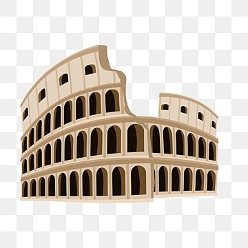
RomaKorupsi, migrasi, inflasi, dan krisis kepemimpinan — kejatuhan Roma adalah cermin yang menakutkan bagi peradaban modern.
Baca di Britannica →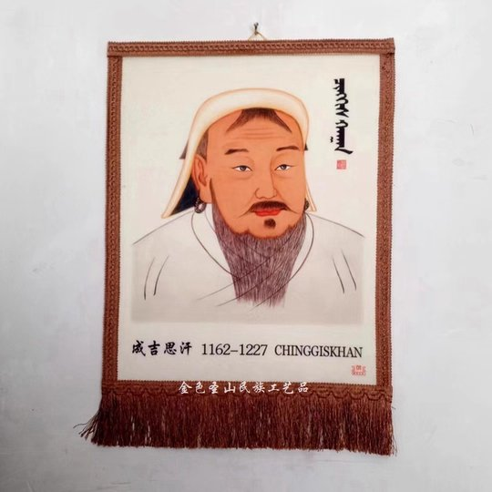
MongolIa membantai jutaan orang, namun juga membuka kebebasan beragama dan jalur perdagangan global terbesar sebelum era modern.
Baca di National Geographic →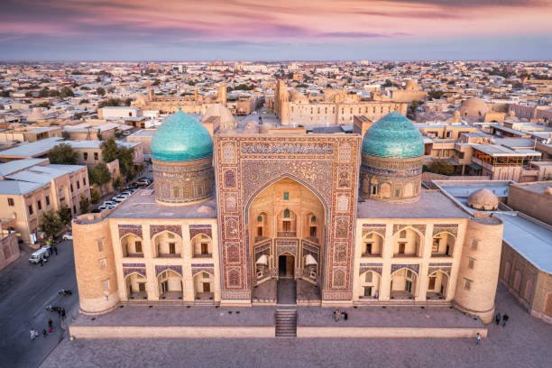
IslamSelama lima abad, para ilmuwan Muslim menerjemahkan, memperluas, dan melampaui warisan intelektual Yunani, Persia, dan India.
Baca di 1001 Inventions →700 tahun mengendalikan Selat Malaka — arteri perdagangan terpenting dunia. Bagaimana kerajaan ini bisa hilang dari ingatan kita?
Baca di World History Encyclopedia →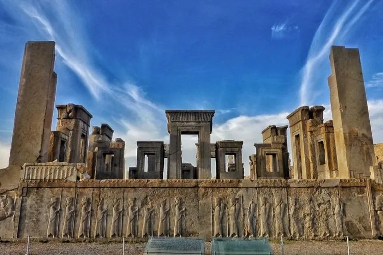
PersiaPada 539 SM, Koresh membebaskan budak dan menjamin kebebasan beragama. Ini bukan mitos — silinder tanah liatnya ada di Museum Inggris.
Lihat di British Museum →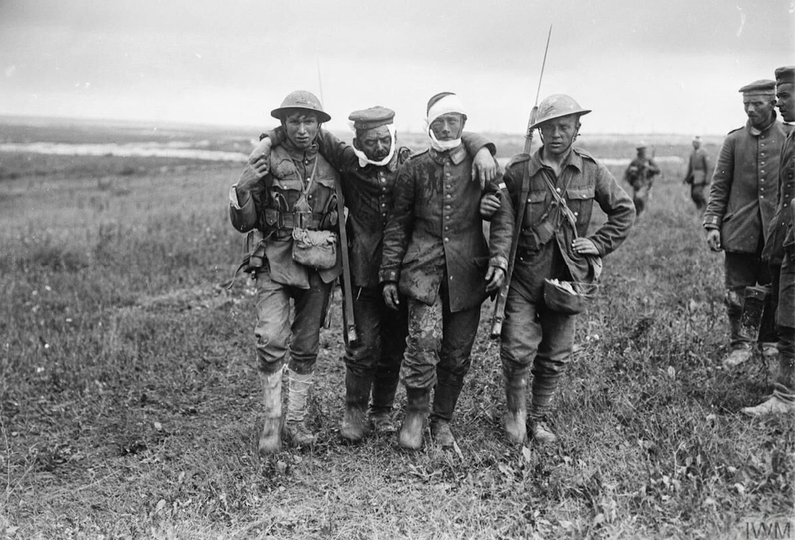
WW1Lumpur, gas mustard, dan kematian tanpa arti. Para penyair seperti Wilfred Owen mengubah pengalaman neraka menjadi literatur abadi.
Baca di Imperial War Museum →Dalam satu abad, kota-kota megah Maya ditinggalkan. Arkeologi modern mulai mengungkap jawaban yang lebih kompleks dari dugaan semula.
Baca di Smithsonian Magazine →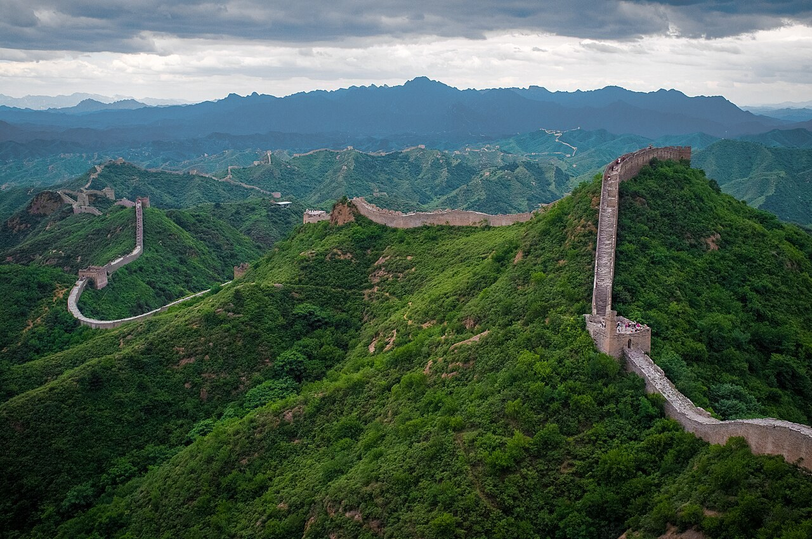
TiongkokDibangun selama 2.000 tahun oleh jutaan pekerja paksa — tembok ini tidak pernah benar-benar menghentikan invasi, tapi mengajarkan banyak tentang ambisi manusia.
Baca di Britannica →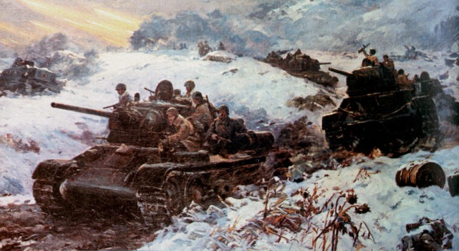
WW2Hitler vs Stalin — dua diktator yang menggunakan kota sebagai simbol ego mereka. 2 juta korban dalam satu pertempuran yang menentukan nasib Perang Dunia II.
Baca di Britannica →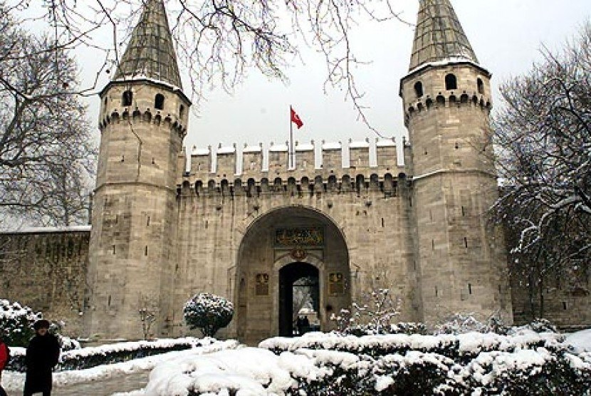
OttomanKetika meriam raksasa Mehmed II meruntuhkan tembok yang bertahan 1.000 tahun, bukan hanya sebuah kota yang jatuh — sebuah era berakhir.
Baca di World History Encyclopedia →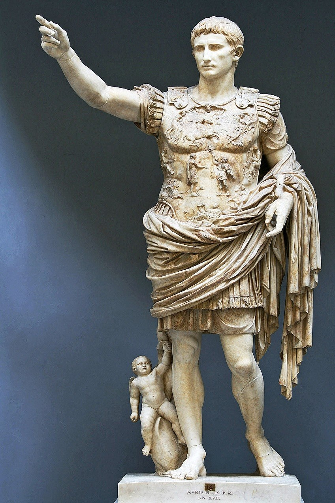
RomaVeni, Vidi, Vici — tiga kata yang merangkum kepercayaan diri seorang pria yang mengubah Roma dari republik menjadi kekaisaran untuk selamanya.
Baca di National Geographic →Manusia-manusia yang dengan keputusan, kecerdasan, atau keberanian mereka mengubah jalannya peradaban.
Rancangan teknis senjata dan kendaraan paling ikonik yang mengubah jalannya peperangan dan sejarah peradaban manusia.
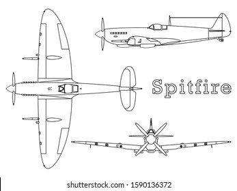
Pesawat tempur legendaris Inggris yang menjadi simbol Pertempuran Britania. Dengan sayap eliptis khasnya, Spitfire mampu menandingi Messerschmitt Bf 109 milik Jerman Nazi.
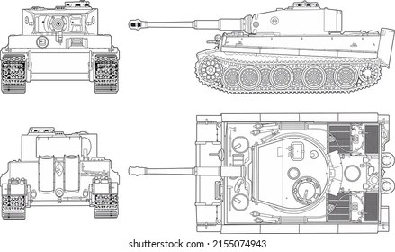
Tank terkuat di medan Perang Dunia II. Dengan meriam 88mm yang mematikan dan baja setebal 100–120mm, satu Tiger mampu menghancurkan puluhan tank Sekutu sebelum bisa dihentikan.
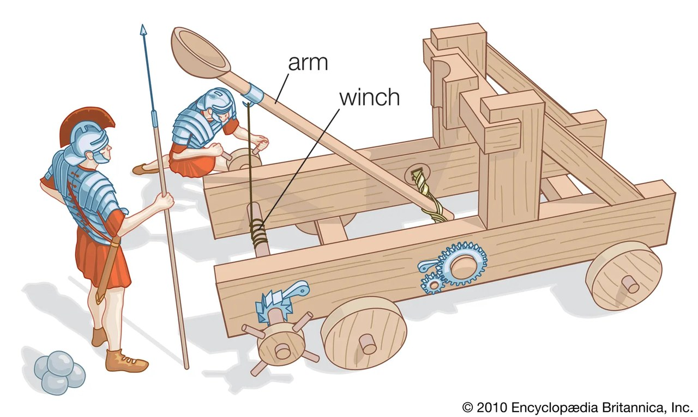
Senjata artileri paling canggih di zaman kuno. Ballista romawi mampu meluncurkan proyektil berat hingga 500 meter dengan akurasi tinggi — senjata penghancur benteng paling ditakuti di medan perang kuno.
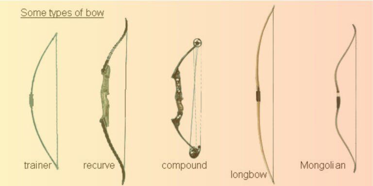
Senjata yang memungkinkan Mongol menaklukkan dunia. Dibuat dari tanduk, tulang, kayu, dan sinew yang dilaminasi, busur ini memiliki tarikan hingga 75kg dan akurasi luar biasa bahkan dari atas kuda yang berlari.
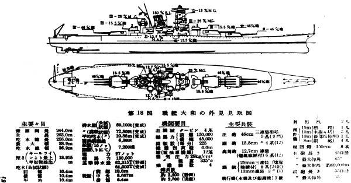
Kapal perang terbesar yang pernah dibangun manusia. Yamato adalah kebanggaan Angkatan Laut Kekaisaran Jepang dengan meriam 460mm raksasa yang bisa menghancurkan target sejauh 42 km — namun tenggelam dihujani bom pada 7 April 1945.
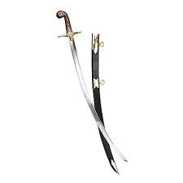
Pedang melengkung khas Persia yang kemudian diadopsi seluruh dunia Islam dan Asia Tengah. Kelengkungan bilahnya dirancang khusus untuk serangan menebas dari atas kuda — senjata yang memadukan estetika dan fungsi secara sempurna.
Potret peradaban yang telah mengubah dunia — dari reruntuhan agung hingga momen-momen yang menggetarkan sejarah.
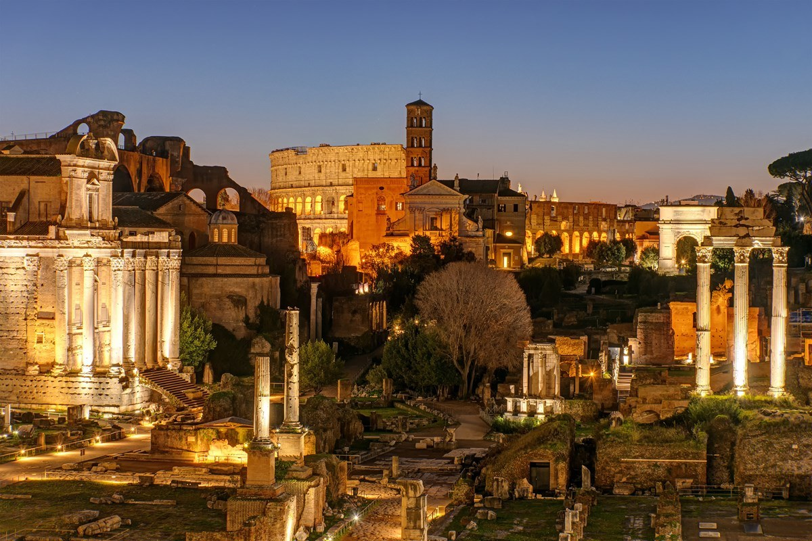
Jantung politik Republik Roma — tempat Caesar berpidato dan senat bersidang selama berabad-abad.
156.000 tentara Sekutu mendarat di lima pantai Prancis dalam operasi amfibi terbesar sejarah.
Relief berusia 2.500 tahun menggambarkan delegasi dari 23 bangsa membawa upeti kepada Raja Darius.
Kehidupan di bawah tanah selama berminggu-minggu. Pertempuran Somme menewaskan 1 juta prajurit.
Dibangun antara 70–80 M, mampu menampung 50.000–80.000 penonton. Simbol terbesar kekuatan arsitektur Roma.
Lukisan abad ke-14 menggambarkan pendiri kekaisaran terbesar yang pernah ada di muka bumi.
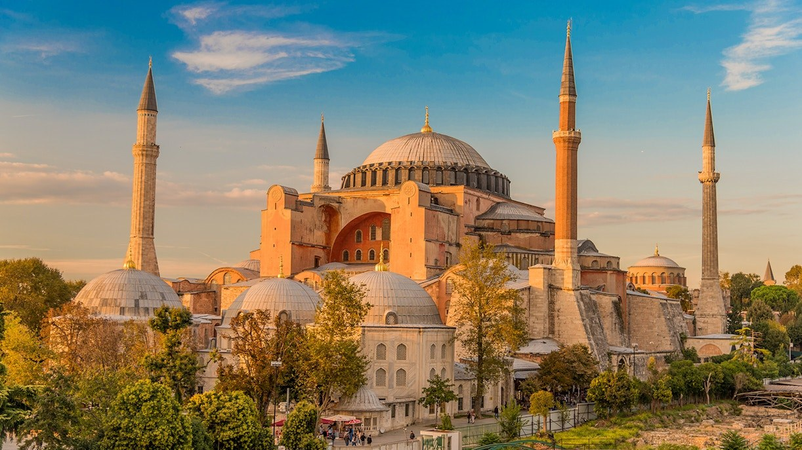
Dibangun 537 M sebagai gereja Kristen, lalu masjid Ottoman, kini museum. Simbol lintas peradaban.
Kompleks candi Buddha terbesar di Asia Tenggara — bekas pusat pendidikan agama kerajaan Sriwijaya.
Dibangun selama 2.000 tahun, memanjang lebih dari 21.000 km — satu-satunya karya manusia yang legendaris.
Piramida Maya yang dibangun sebagai kalender arsitektur — 365 anak tangga setara hari dalam setahun.
Pusat kekuasaan Ottoman selama 400 tahun — tempat sultan-sultan besar mengatur tiga benua.
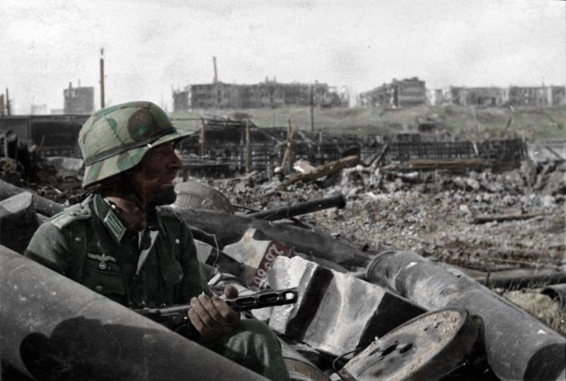
Operasi Barbarossa membawa pasukan Jerman jauh ke dalam wilayah Soviet sebelum pembalikan tragis di Stalingrad.
Data cuaca terkini kota tempat saya menulis dan meneliti sejarah dunia.
TOTAL 240 ARTIKEL
6 BULAN TERAKHIR
Tersedia untuk diskusi sejarah, kuliah umum, penulisan bersama, konsultasi riset, atau sekadar berbagi kecintaan terhadap sejarah dunia. Kirim pesan dan pesan Anda akan langsung masuk ke email saya.